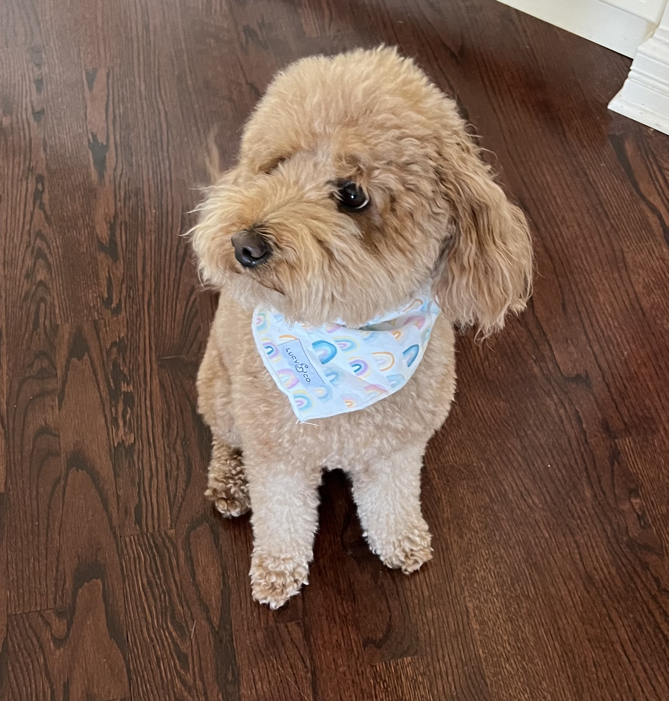

I'm the cat on the left by the way. Not the one on the right.
I'm Pavan Acharya. Below are a few of my favorite things:
You may be wondering ... why the Spongebob popsicles? Haven't those bubble gum eyeballs been sitting in the back of the ice cream truck for years? Well, yes and no. They've actually been sitting in there for DECADES ... probably not years. But I promise you that there's more to me than decades-old stale bubble gum.
Quite frankly, I've never been a huge fan of cats. Cats are very independent, which I respect. But I've found that they aren't fans of catch. Also, they don't bark at random delivery drivers when they come by your place. Actually, maybe that's a good thing. Anyway, here's a photo of my dog.
